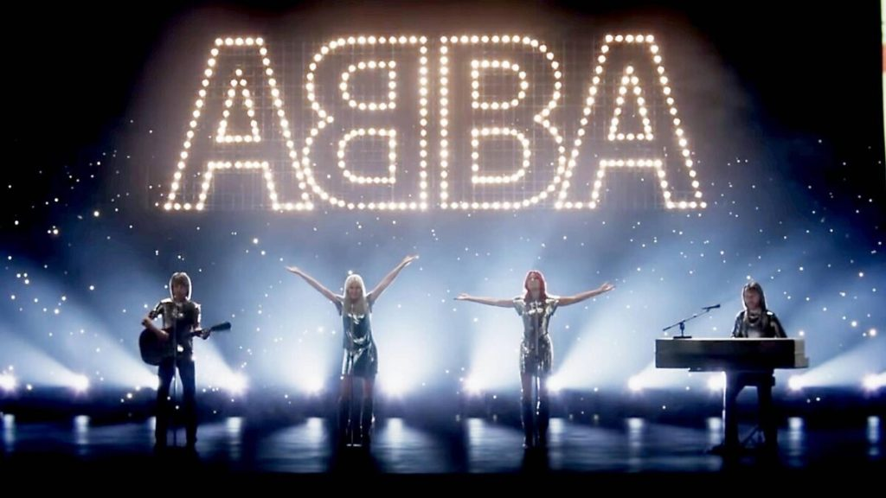

Meus
ingressos
Meus
ingressos Sair
da conta
Sair
da contaHolograma Revoluciona a Experiência Musical
Por: Jhenifer Lorrane | Equipe Melodias Sem Fronteiras | Data: 04 de Junho de 2024
Hologramas são projeções tridimensionais de imagens criadas por meio da interferência de raios de luz de um laser ou outra fonte de luz coerente. Eles são capazes de criar a ilusão de um objeto físico em três dimensões, permitindo que espectadores vejam diferentes perspectivas ao se moverem ao redor da projeção. Nos últimos anos, essa tecnologia tem sido cada vez mais utilizada em shows e eventos ao vivo, proporcionando experiências únicas e imersivas.
Em um show inovador realizado no Estádio Central em 2022, a banda ABBA utilizou hologramas para proporcionar uma performance inesquecível. A tecnologia permitiu que os membros da banda, tanto os presentes quanto os ausentes, aparecessem no palco em suas formas jovens, recriando a energia de seus anos de glória. Essa apresentação faz parte da turnê "ABBA Voyage", que tem sido aclamada por integrar tecnologia de ponta com o carisma dos ícones musicais.
A produção do show destacou que essa inovação é apenas o começo de uma nova era para os espetáculos ao vivo. "Estamos explorando os limites da tecnologia para criar experiências cada vez mais interativas e inesquecíveis para o público", afirmou o diretor artístico do evento.
Com ingressos esgotados e uma recepção calorosa do público, este show com holograma marca um ponto importante na história dos eventos musicais e abre caminho para novas possibilidades no entretenimento ao vivo.
Os organizadores também revelaram que já estão planejando mais shows utilizando hologramas, prometendo trazer uma nova dimensão para os fãs de música em todo o mundo. "Acreditamos que esta tecnologia tem o poder de mudar a forma como as pessoas vivenciam a música", concluiu o diretor.
Os espectadores saíram do evento maravilhados, compartilhando nas redes sociais suas impressões e destacando a qualidade e o realismo dos hologramas. "Foi como ver meus ídolos ao vivo novamente. Uma experiência indescritível!", comentou um fã nas redes sociais.
Sem dúvida, o uso de hologramas em shows ao vivo é uma tendência que veio para ficar, e estamos ansiosos para ver o que o futuro reserva para esta tecnologia fascinante.